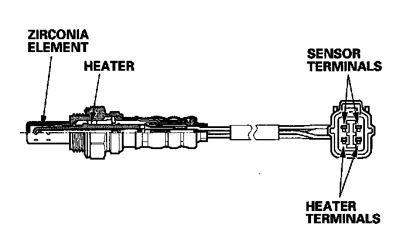

Secondary Heated Oxygen Sensor

Secondary Heated Oxygen Sensor (Secondary HO2S)
The secondary HO2S detects the oxygen content in the exhaust gas downstream of the three way catalytic converter (TWC), and sends signals to the ECM which varies the duration of fuel injection accordingly. To stabilize its output, the sensor has an internal heater. The ECM compares the HO2S output with the A/F sensor output to determine catalyst efficiency. The secondary HO2S is located on the TWC.